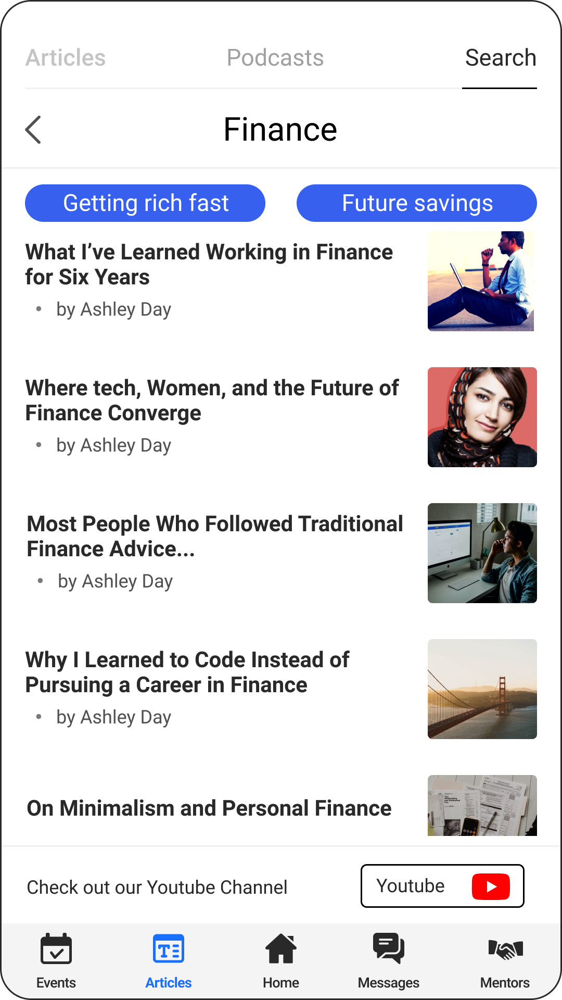
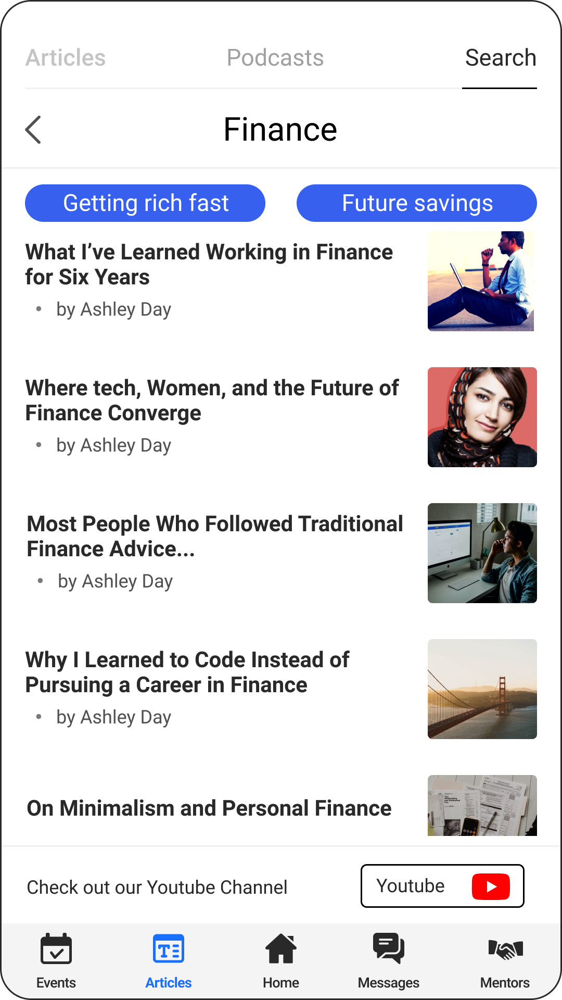

I learned a lot about scope creep in this project. This project was immense in terms of initial scope. The team and I tried to get the stakeholders to prioritize features to design in version one of the app. We broke the project into bite sized pieces for each of us to focus on. During this time we met weekly to discuss our progress and give and receive feedback. This project worked best when our team was working well together, collaborating, and communicating in a timely fashion.
 

In our initial meetings we discussed what the scope of the project would be. We requested to do some surveys so we could figure out the audience for this app and how it would be used. This was shot down due to the need to get this app out asap. Dweebs global is a non-profit that is growing faster than anticipated so the app became of utmost importance. We were assured that the information we would be gathering was knowledge that the stakeholders already possessed and decided to move on despite our apprehension.
Our collaboration occurred across 3 different time zones within our team and 5 different time zones across all stakeholders. Teammates were located from the West coast in the US to the middle of Italy. We had two meetings a week to work on creating the screens together and discssed overall styles and solutions to problems we faced. It was a challenge communicating across these different time zones but we used various methods to maintain our tasks and keep on track for our requested delivery date of these wires. As with all design, many of our best designs came from collaborative meetings where we designed together with ideas created from the combined brain power of the team. Clunky design was avoided through an addition of a carousel for navigation to the third screen. Our collaboration and different approaches proved to be a great asset for this project.
Once we completed our BW versions of the app we got together with the stakeholders and the dev team for the first to make sure that everything we were asking for could be developed using their capable skillsets. The head of development assured us that if we could design it, he could make it happen. We didn't know at the time that he would not be the one developing the app but was the head person overseeing the development. Due to the time constraints we were under we did not get to do any user testing here before spending time in hifi designs. Near the end of this phase of design we lost contact with one of our 3 team members and were forced to divvy the remaining tasks between the two remaining members.
Mid fidelity wires were designed for handoff to the development team.
We presented the screens to the different departments within Dweebs Global. Our initial pushback about testing came back to bite us here when we began doing documentation for the dev team. We found that screens were missing feedback and confirmation messages and links between different sections of the app. At this point we advocated for more time to make a fully fleshed out flow diagram. At this point when we were preparing to do testing on our user base we received a message from one of the dev team members asking for a meeting. This cost us time to coordinate meetings across 4 time zones. Fortunately these were minor issues and were easily addressed within our design.
With the go ahead from the dev team, we dove back into preparing for the usability tests. We were able to quickly contact the volunteers and spent the rest of the week building 3 prototypes; one for users, one for mentors, and one for mentees who would be assisting with the mental health chat. We also created a survey for the usability tests, to help guide us smoothly through our interviews.
We organized the interviews to be user led to see how interaction occurred within the app. Early in design Dweebs global had requested a variety of features and that each feature was of equal importance. The goal of testing was to identify if the app was easy to navigate and easy to understand as well as identifying if users prioritized certain features over others.
Users found that uneslected icons were difficult to see. A major problem as our entire app navigation was based around this one bar.
We reviewed accessibility guidelines and did some further testing after darkening the icons so that it stands out from the grey background. Our second round of testing determined this was an effective solution as this issue was not identified.
The main lesson learned here was about scope creep. The initial list of features for this design should have been simplified for V1. A lot of the issues we ran into were due to focusing our efforts on the many systems they wanted to put in place for V1 of the app. The problem with focusing on so many systems became apparent with the interactions between them. Our learning curve became apparent in communicating the why of user experience research prior to our implementation of design.
Secondary to scope creep, our ability to communicate effectively across all team members and stakeholders was key to our success in this project. Due to team members being across 3 time zones in 2 different countries we needed good ways to keep in contact so we used WhatsApp to communicate. It was the best way we could keep each other apprised while maintaining our normal jobs and stay within timeframes. We used various tools to keep on track and take notes and used Figma due to it's collaborative function. When any of us had meetings outside of our normal meeting times we communicated using WhatsApp to make sure everyone was up to date and to not waste each others time working on things already discussed.
In future projects I would advocate for more initial research so we could identify our market prior to design. In this instance there was not a lot of time given and we were overwhelmed by the tasks presented. Accessibility should have been on our forefront from the beginning and we should have been able to identify a truly minimum viable product to design for V1.